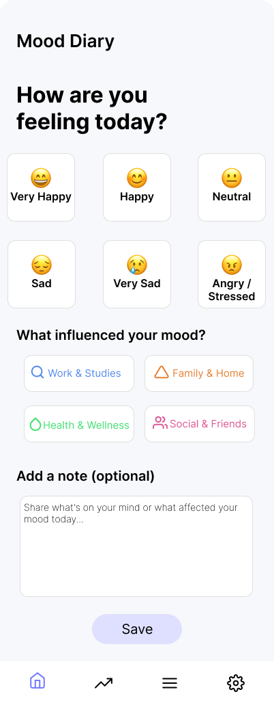
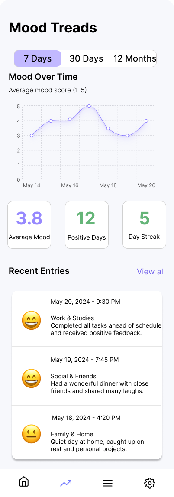
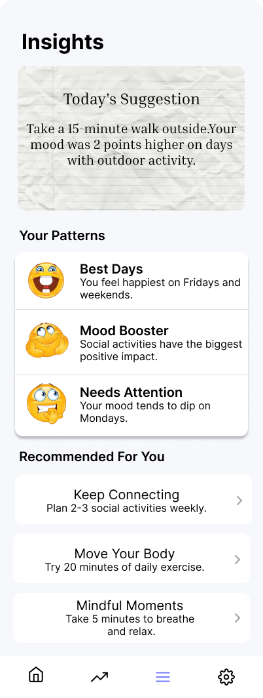
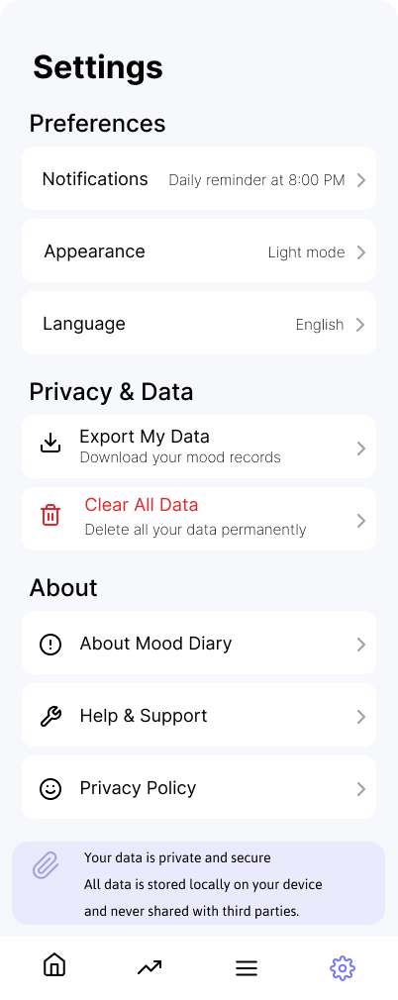
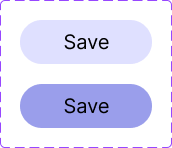
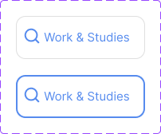
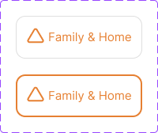
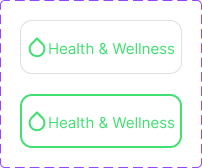
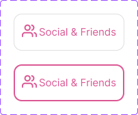
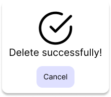

这个项目围绕移动端心情记录场景展开，重点优化记录流程、视觉层级和数据反馈。界面采用柔和色彩与卡片式布局，减少信息压力，让情绪记录更轻松、更持续。



Project Overview
项目概览
Mood Diary 以“低负担记录”为核心，让用户用更少步骤完成情绪输入，并在长期使用中看到自己的情绪模式。
Key Features
核心功能
功能设计保持克制，每个模块都围绕“记录、理解、回顾”三个目标展开。
情绪记录
快速记录当天心情、标签与备注，降低每日使用门槛。
趋势分析
通过图表展示情绪变化，帮助用户观察周期性波动。
心情洞察
总结近期记录内容，提供更直观的情绪反馈。
个性设置
支持设置与管理，让应用体验更贴合个人使用习惯。
Interface Design
界面展示
使用统一的圆角、卡片、留白与低饱和配色，让视觉体验保持舒适和稳定。
Record
Trends
Insights

Settings
Design Details
设计细节
小组件与状态卡片用于增强页面节奏，让数据展示更轻量。






Process
设计思路
01
降低记录成本
将记录动作拆解为简单选择与轻量输入，避免用户因为流程复杂而放弃记录。
02
强化长期反馈
用趋势图、数据卡片和洞察模块，让用户看到持续记录带来的价值。
03
保持情绪友好
视觉上避免强刺激色彩，使用温暖、柔和、克制的界面语言。
Reflection
一个好的记录工具，不只是收集数据，也应该让用户更理解自己。
项目收获
通过这个项目，我更熟悉了移动端信息层级、卡片布局和情绪类产品的交互节奏。
后续优化
未来可以加入日历视图、情绪标签筛选、数据导出以及更个性化的洞察建议。
展示重点
作品集页面突出产品目标、核心功能和界面完成度，适合用于课程展示或求职作品集。